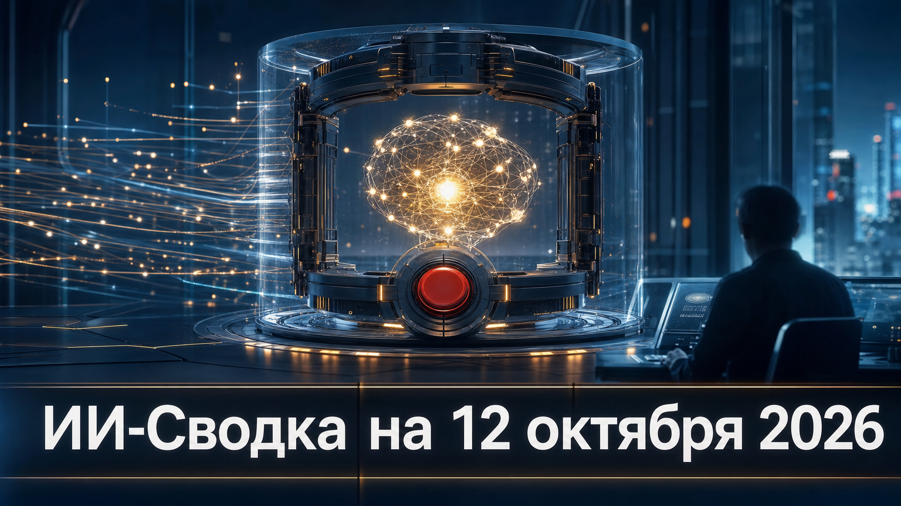

Новостей сегодня меньше, чем обычно
В сегодняшней повестке выделяется не новый релиз модели, а вопрос о том, как сохранять управляемость систем, способных самостоятельно выполнять длительные задачи. Глава Microsoft Сатья Наделла предложил архитектурный принцип, при котором контроль не остаётся полностью внутри самой модели.
Практический смысл этого подхода — переносить критические ограничения, аудит и право остановки в отдельный слой, доступный уполномоченному человеку. Это особенно актуально для агентных ИИ-систем, которые получают доступ к инструментам, данным и внешним сервисам.
Генеральный директор Microsoft Сатья Наделла заявил, что ИИ-системам необходима архитектура доверия с возможностью экстренно приостановить или отключить модель во время выполнения задачи. Как сообщает TechCrunch, он предложил отделять базовую модель от управляющей оболочки и выносить safeguards во внешний контур.
Наделла также указал на необходимость защищаемых, читаемых человеком записей значимых действий модели. Это пока не анонс готового стандарта или продукта Microsoft, а публичная позиция о принципах контроля. Но она усиливает запрос рынка на агентные системы, в которых можно не только назначать разрешения заранее, но и наблюдать за действиями, проверять их задним числом и вмешиваться в ходе выполнения задачи.